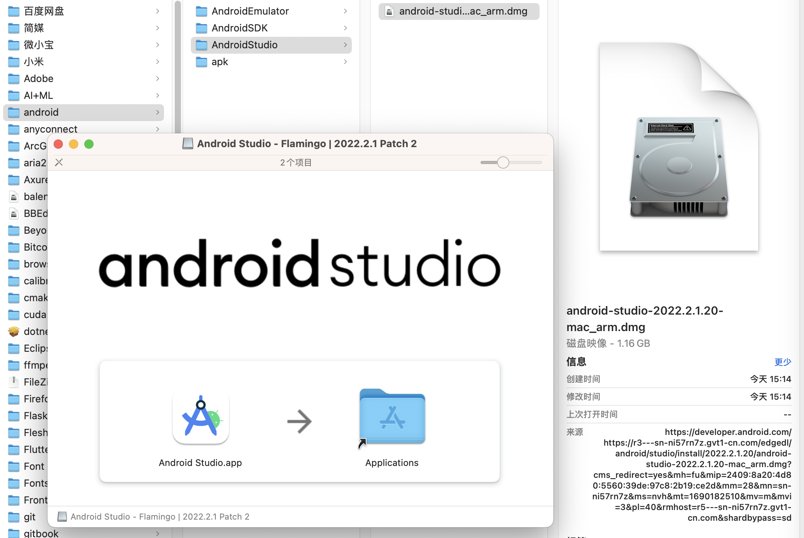
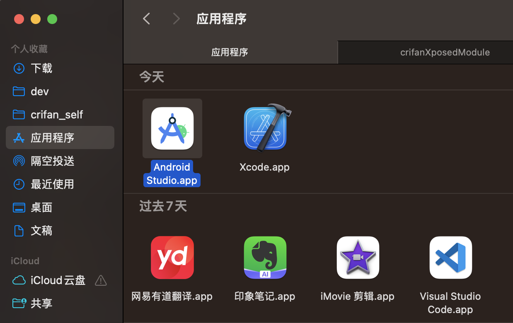
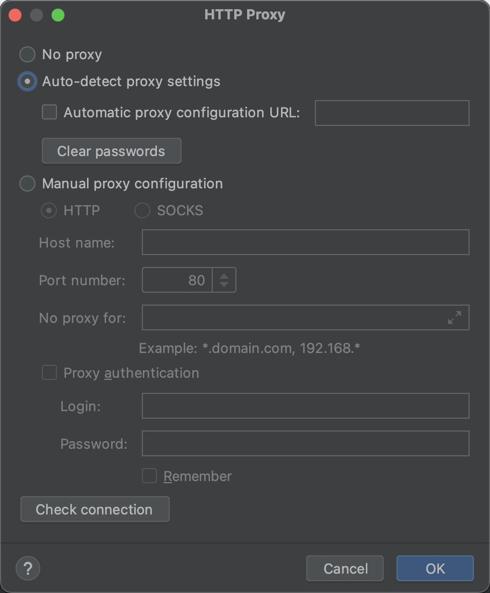
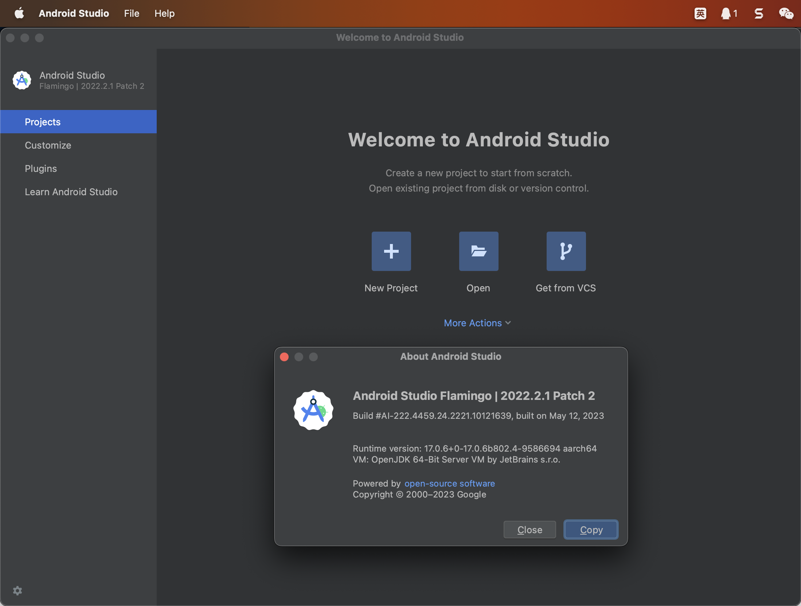
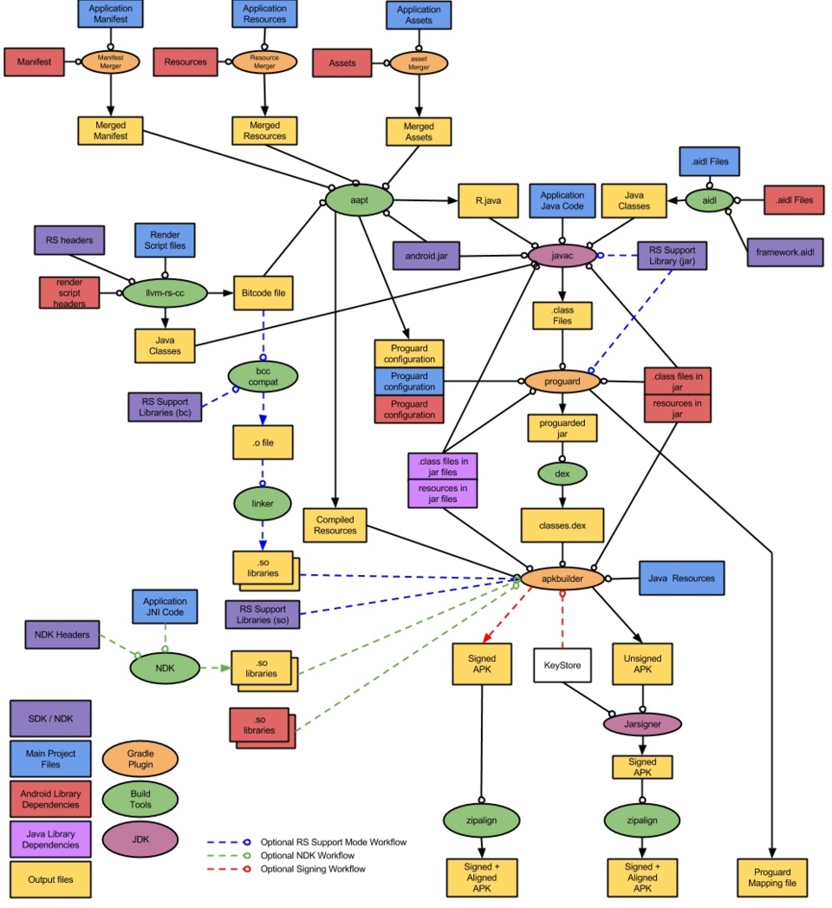
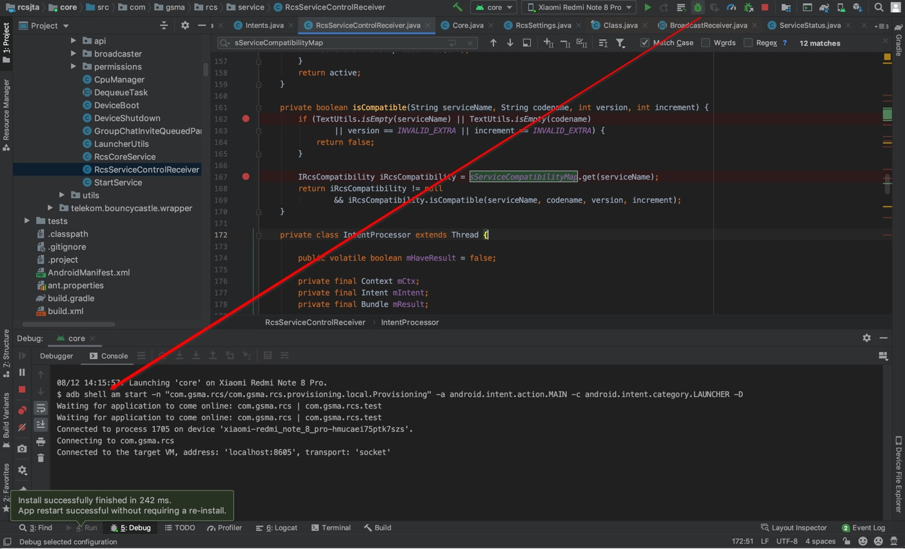

Android Studio
TODO：
把相关多个帖子内容整理过来
- 【已解决】Android Studio中左边项目文件列表如何跳转切换到当前打开的文件
- 【已解决】Android中用preference-v7后编译报错：values-v26.xml AAPT error resource android attr colorError not found
- 【已解决】Android中context的startService对应的service运行机制
- 【未解决】通过Android Studio打开调试设置Java Exception Breakpoints和Exception Breakpoints看看能否找到rcsjta中rcs的core的service如何启动的逻辑
- 【记录】Android Studio根据提示升级到最新4.0.1版本和更新其他内容
- 【已解决】rcsjta的RI运行报错：java.lang.SecurityException Not allowed to bind to service Intent
Android Studio- 简称：
AS
- 简称：
下载和安装
从Android Studio的官网的下载页面去下载到和当前电脑匹配的安装包，去安装即可。
比如，此处Mac M2 Max匹配的是Apple Silicon的Android Studio Flamingo | 2022.2.1 Patch 2的安装包：
android-studio-2022.2.1.20-mac_arm.dmg

双击后，弹框中，把Android Studio.app拖动到应用程序，即可实现安装：

之后即可双击应用程序中的Android Studio.app启动AS，双击启动，进行初始化配置
期间需要注意的一点是，最好是，已有代理工具，且此处HTTP Proxy从默认的No Proxy改为Auto-detect proxy settings：

这样可以加速后续的google资源的下载。
初始化配置后，即可进入主页面：

此处相关版本信息是：
Android Studio Flamingo | 2022.2.1 Patch 2
Build #AI-222.4459.24.2221.10121639, built on May 12, 2023
Runtime version: 17.0.6+0-17.0.6b802.4-9586694 aarch64
VM: OpenJDK 64-Bit Server VM by JetBrains s.r.o.
macOS 13.2.1
GC: G1 Young Generation, G1 Old Generation
Memory: 1280M
Cores: 12
Metal Rendering is ON
Registry:
external.system.auto.import.disabled=true
ide.text.editor.with.preview.show.floating.toolbar=false
gradle.version.catalogs.dynamic.support=true
Non-Bundled Plugins:
com.developerphil.adbidea (1.6.9)
AS快捷键
- 跳转到文件开始/末尾
Win：Ctrl+Home/EndMac：Ctrl+Fn+Left/Right- 注：
Mac中没有Home/End- 有等价的：
Fn+Left/RightFn+Left=HomeFn+Right=End
- 有等价的：
- 注：
gradle
TODO：
- 【已解决】Mac中Android Studio下载gradle的zip包速度太慢
- 【已解决】Mac中Android Studio中gradle的库下载速度慢
- 【已解决】Android Studio中gradle编译的项目如何加参数：-Xlint:unchecked
- 【已解决】Android Studio中gradle报错：ERROR Cause compileSdkVersion is not specified
- 【已解决】Android中gradle编译报错：This project uses AndroidX dependencies, but the android.useAndroidX property is not enabled
自动化编译过程
安卓编译过程：

-》手动去操作，很复杂
-》所以一般会需要build=构建工具实现自动化编译过程
安卓的构建工具有
- 最早的：
Ant - 后来的=现在主流的：
Gradle - 最新的：
Buck- 来自
Facebook
- 来自
开发安卓的IDE是：Android Studio
其现在已内置支持Gradle，会自动帮忙调用Gradle去编译你的apk
但是其内部过程你是不清楚的，所以最好学学Gradle，搞清楚过程。
AS调试
AS调试时就是调用的adb shell am start
之前就有了解过
adb shell am start
现在发现，Android Studio去调试时，内部实现也就是调用了：
08/12 14:15:57: Launching 'core' on Xiaomi Redmi Note 8 Pro.
$ adb shell am start -n "com.gsma.rcs/com.gsma.rcs.provisioning.local.Provisioning" -a android.intent.action.MAIN -c android.intent.category.LAUNCHER -D
